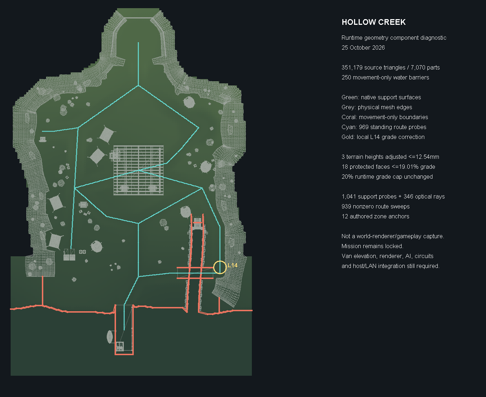

25 October 2026. This is a runtime geometry component diagnostic, not a world-renderer or gameplay capture. Hollow Creek remains locked.

The current source exports 351,179 exact triangles. Independent Blender probes agree with 1,041 walking supports and 346 optical rays. All 969 standing route samples, 939 nonzero movement sweeps and 12 zone anchors pass. Movement-only water barriers do not block light.
L14 previously failed at the footprint rim. Three local heights change by at most 12.54mm; 908 other meshes and all terrain XY, topology, UVs and materials remain intact. The terrain GLB matches 41,782 raw native triangles and 432 source atlas pixels.
These checks do not establish mission, renderer, van-height, AI, circuits, UV-goose, player or host/LAN integration. Previous native art review · Actual component results · Shared gallery